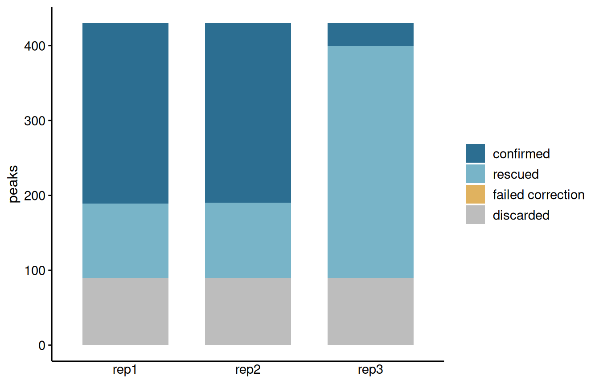
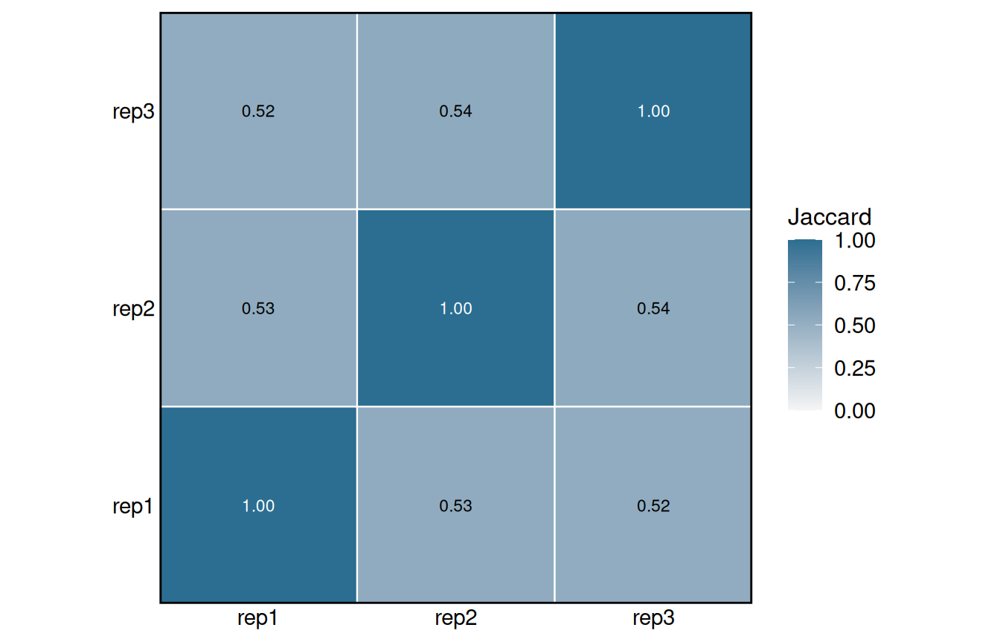
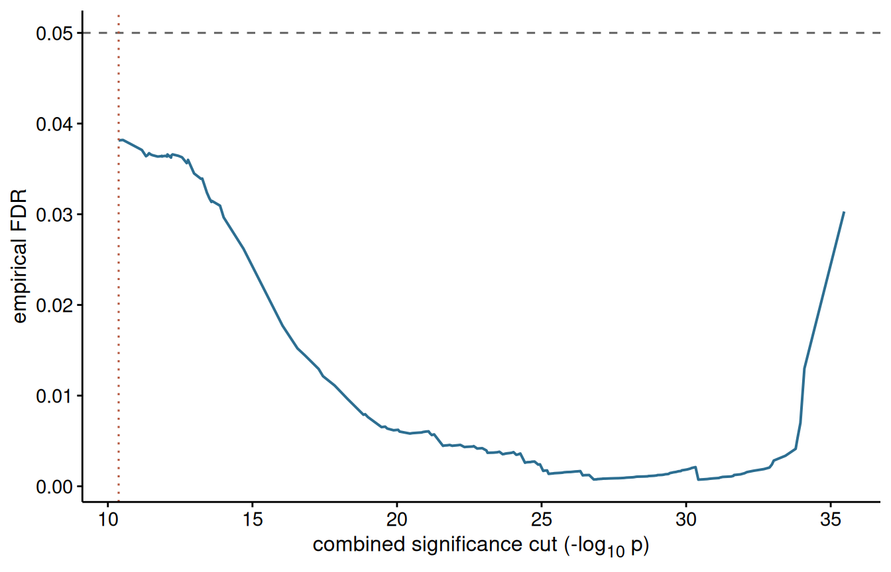

Consensus regions across replicated experiments
Sebastian Gregoricchio, Ph.D.
Netherlands Cancer Institute, Oncogenomics division, Amsterdam - Netherlandss.gregoricchio@nki.nl
Last update: 08th September, 2026
Source:vignettes/consensusRegions.vignette.Rmd
consensusRegions.vignette.RmdIntroduction
Replicates disagree. A region can be convincing in two samples and just below threshold in the third, and the usual response, taking the intersection of the peak sets, throws it away. Taking the union instead keeps it along with every piece of noise the worst replicate produced.
consensusRegions does neither. Each peak is examined
together with the peaks that overlap it in the other replicates, and
their p-values are combined into one. Repeated weak evidence then adds
up to something that survives, while a strong peak nobody else saw does
not. The idea comes from MSPC (Jalili et
al., 2015); what is added here is the ability to weight
replicates, to calibrate the decision threshold rather than fix it, and
to work with peak files that have lost their statistics.
Reading peaks
The example data is three replicates over two chromosomes, with a deliberately shallow third sample.
peakFiles <- system.file("extdata",
c("rep1.narrowPeak",
"rep2.narrowPeak",
"rep3.narrowPeak"),
package = "consensusRegions")
peaks <- readPeakSets(peakFiles, sampleNames = c("rep1", "rep2", "rep3"))
peaks
> GRangesList object of length 3:
> $rep1
> GRanges object with 430 ranges and 7 metadata columns:
> seqnames ranges strand | name score signalValue
> <Rle> <IRanges> <Rle> | <character> <numeric> <numeric>
> [1] chr1 57515-58142 * | peak_1 98 2.72737
> [2] chr1 102197-103030 * | peak_2 124 3.46213
> [3] chr1 145913-146341 * | peak_3 192 5.35816
> [4] chr1 217889-218140 * | peak_4 58 1.63109
> [5] chr1 235442-235885 * | peak_5 85 2.37401
> ... ... ... ... . ... ... ...
> [426] chr2 8631942-8632279 * | peak_426 98 2.74174
> [427] chr2 8742508-8742933 * | peak_427 61 1.71393
> [428] chr2 8745954-8746585 * | peak_428 212 5.90034
> [429] chr2 8772842-8773607 * | peak_429 204 5.66718
> [430] chr2 8862653-8863473 * | peak_430 170 4.73122
> pValue qValue peak negLog10P
> <numeric> <numeric> <integer> <numeric>
> [1] 8.18212 7.18212 295 8.18212
> [2] 10.38638 9.38638 392 10.38638
> [3] 16.07448 15.07448 236 16.07448
> [4] 4.89327 3.89327 112 4.89327
> [5] 7.12203 6.12203 220 7.12203
> ... ... ... ... ...
> [426] 8.22521 7.22521 188 8.22521
> [427] 5.14178 4.14178 233 5.14178
> [428] 17.70101 16.70101 299 17.70101
> [429] 17.00155 16.00155 353 17.00155
> [430] 14.19366 13.19366 435 14.19366
> -------
> seqinfo: 2 sequences from an unspecified genome; no seqlengths
>
> $rep2
> GRanges object with 430 ranges and 7 metadata columns:
> seqnames ranges strand | name score signalValue
> <Rle> <IRanges> <Rle> | <character> <numeric> <numeric>
> [1] chr1 57552-58092 * | peak_1 141 3.93745
> [2] chr1 102200-102630 * | peak_2 118 3.28321
> [3] chr1 145909-146277 * | peak_3 103 2.87270
> [4] chr1 201963-202312 * | peak_4 67 1.87344
> [5] chr1 235377-235868 * | peak_5 54 1.51754
> ... ... ... ... . ... ... ...
> [426] chr2 8651848-8652239 * | peak_426 56 1.57910
> [427] chr2 8742442-8742750 * | peak_427 66 1.83676
> [428] chr2 8745997-8746366 * | peak_428 108 3.02740
> [429] chr2 8772694-8773478 * | peak_429 140 3.89196
> [430] chr2 8862514-8863166 * | peak_430 114 3.18792
> pValue qValue peak negLog10P
> <numeric> <numeric> <integer> <numeric>
> [1] 11.81234 10.81234 265 11.81234
> [2] 9.84962 8.84962 214 9.84962
> [3] 8.61810 7.61810 161 8.61810
> [4] 5.62032 4.62032 170 5.62032
> [5] 4.55263 3.55263 239 4.55263
> ... ... ... ... ...
> [426] 4.73729 3.73729 219 4.73729
> [427] 5.51028 4.51028 161 5.51028
> [428] 9.08219 8.08219 175 9.08219
> [429] 11.67587 10.67587 402 11.67587
> [430] 9.56377 8.56377 325 9.56377
> -------
> seqinfo: 2 sequences from an unspecified genome; no seqlengths
>
> $rep3
> GRanges object with 430 ranges and 7 metadata columns:
> seqnames ranges strand | name score signalValue
> <Rle> <IRanges> <Rle> | <character> <numeric> <numeric>
> [1] chr1 57439-57955 * | peak_1 92 2.55995
> [2] chr1 102191-102497 * | peak_2 59 1.64347
> [3] chr1 145851-146446 * | peak_3 69 1.93957
> [4] chr1 235338-235729 * | peak_4 48 1.35000
> [5] chr1 240015-240714 * | peak_5 66 1.84047
> ... ... ... ... . ... ... ...
> [426] chr2 8742492-8743024 * | peak_426 48 1.35000
> [427] chr2 8745833-8746478 * | peak_427 82 2.30257
> [428] chr2 8772831-8773465 * | peak_428 78 2.17616
> [429] chr2 8862620-8863418 * | peak_429 57 1.60899
> [430] chr2 8986598-8986983 * | peak_430 55 1.55471
> pValue qValue peak negLog10P
> <numeric> <numeric> <integer> <numeric>
> [1] 7.67984 6.67984 234 7.67984
> [2] 4.93041 3.93041 125 4.93041
> [3] 5.81871 4.81871 304 5.81871
> [4] 4.05000 3.05000 181 4.05000
> [5] 5.52140 4.52140 369 5.52140
> ... ... ... ... ...
> [426] 4.05000 3.05000 264 4.05000
> [427] 6.90770 5.90770 293 6.90770
> [428] 6.52848 5.52848 324 6.52848
> [429] 4.82697 3.82697 379 4.82697
> [430] 4.66414 3.66414 180 4.66414
> -------
> seqinfo: 2 sequences from an unspecified genome; no seqlengthsreadPeakSets() inspects the files and reports which
statistic it can use. narrowPeak keeps -log10 p-values in its eighth
column, so those go straight in. A BED with only a score gets
rank-transformed. A bare BED3 has nothing at all, and the analysis will
fall back to counting replicates instead of combining evidence.
Call peaks permissively
This is the mistake that ruins the whole exercise, so it is worth
saying plainly. If you call peaks at q < 0.05 and run
the consensus on what survives, there is nothing left to rescue and you
have written an intersection with extra steps. Call at something like
p < 1e-3 and let buildConsensus() do the
thresholding. The two-tier design assumes exactly this.
A first run
result <- buildConsensus(peaks, verbose = FALSE)
result
> ConsensusRegions
> replicates : 3 ( rep1, rep2, rep3 )
> score type : log10pvalue
> combination : stouffer
> combined cut : 1e-08
> weights : rep1=1, rep2=1, rep3=1
> consensus : 292 regions
> width (median) : 786.5 bp
> width (max) : 2200 bpThe per-replicate summary is where to look first.
consensusStats(result)
> replicate nTested nStringent nWeak nConfirmed nRescued nFalsePositive
> 1 rep1 430 241 189 340 99 0
> 2 rep2 430 240 190 340 100 0
> 3 rep3 430 30 400 340 310 0
> nDiscarded rescueRate
> 1 90 0.2911765
> 2 90 0.2941176
> 3 90 0.9117647nRescued counts peaks that were only weak on their own
and were kept because the others agreed. That number is the reason to
use this method, and also the thing to be suspicious of. If it dwarfs
everything else, weakThreshold is too permissive and the
combination is confirming noise.
plotRescue(result)
The consensus regions carry the number of contributing replicates and a significance recomputed from their member peaks.
head(consensusRanges(result), 3)
> GRanges object with 3 ranges and 4 metadata columns:
> seqnames ranges strand | nReplicates nPeaks replicates
> <Rle> <IRanges> <Rle> | <integer> <integer> <character>
> [1] chr1 57439-58142 * | 3 3 rep1,rep2,rep3
> [2] chr1 102191-103030 * | 3 3 rep1,rep2,rep3
> [3] chr1 145851-146446 * | 3 3 rep1,rep2,rep3
> combinedNegLog10P
> <numeric>
> [1] 25.2442
> [2] 22.3973
> [3] 26.9232
> -------
> seqinfo: 2 sequences from an unspecified genome; no seqlengthsWeighting the replicates
Fisher’s method treats every replicate as equally informative. Yours probably are not: one is shallower, or has a worse antibody, or was prepared on a bad day. The choices are usually to drop it, which wastes data, or to keep it and let it drag the combined statistic around. Weighting is the third option.
When the BAM files are available, FRiP and library size can be measured directly:
weights <- computeReplicateWeights(
peaks,
method = "frip",
bamFiles = c("rep1.bam", "rep2.bam", "rep3.bam"))More often the alignments are long gone and only the numbers survive in an old QC report. Pass them in:
weights <- computeReplicateWeights(peaks, method = "frip",
frip = c(0.21, 0.19, 0.06),
verbose = FALSE)
weights
> rep1 rep2 rep3
> 1.3695652 1.2391304 0.3913043
> attr(,"metrics")
>
[38;5;246m# A tibble: 3 × 3
[39m
> replicate frip librarySize
>
[3m
[38;5;246m<chr>
[39m
[23m
[3m
[38;5;246m<dbl>
[39m
[23m
[3m
[38;5;246m<dbl>
[39m
[23m
>
[38;5;250m1
[39m rep1 0.21
[31mNA
[39m
>
[38;5;250m2
[39m rep2 0.19
[31mNA
[39m
>
[38;5;250m3
[39m rep3 0.06
[31mNA
[39mAnd when there is nothing but the peaks themselves, each replicate can be scored by how well it agrees with the others:
computeReplicateWeights(peaks, method = "intrinsic", verbose = FALSE)
> rep1 rep2 rep3
> 0.9925346 1.0069021 1.0005633
> attr(,"metrics")
>
[38;5;246m# A tibble: 3 × 2
[39m
> replicate jaccard
>
[3m
[38;5;246m<chr>
[39m
[23m
[3m
[38;5;246m<dbl>
[39m
[23m
>
[38;5;250m1
[39m rep1 0.525
>
[38;5;250m2
[39m rep2 0.533
>
[38;5;250m3
[39m rep3 0.529That last measure is circular, since agreement is also what the consensus is testing. Use it when there is no alternative, not in preference to FRiP.
Weights only reach the combination through Stouffer’s Z or Lancaster’s method. Fisher and the rank product ignore them.
weighted <- buildConsensus(peaks, weights = weights,
combinationMethod = "stouffer",
verbose = FALSE)
consensusStats(weighted)
> replicate nTested nStringent nWeak nConfirmed nRescued nFalsePositive
> 1 rep1 430 241 189 340 99 0
> 2 rep2 430 240 190 340 100 0
> 3 rep3 430 30 400 340 310 0
> nDiscarded rescueRate
> 1 90 0.2911765
> 2 90 0.2941176
> 3 90 0.9117647
plotJaccard(weighted)
Choosing the combination
| Method | Weights | Use it when |
|---|---|---|
fisher |
no | Reproducing MSPC, or replicates really are comparable |
stouffer |
yes | Default. Replicate quality varies |
lancaster |
yes | Weights wanted, Fisher-like sensitivity to one strong peak |
rankProduct |
no | Only scores available, or p-values you do not trust |
One caveat about Fisher that matters more than it usually gets credit for: the combined statistic keeps accumulating as replicates are added. With three samples this is fine. With twenty donors, a region detected faintly in all of them starts to look overwhelmingly significant, which is not what anyone means by reproducible. Stouffer and the rank product degrade more gracefully at that scale.
The threshold does not carry across methods. Fisher, Stouffer and
Lancaster all sit on roughly the same scale, so a cut chosen for one is
a reasonable starting point for the others. The rank product does not.
It works on relative ranks, so the best a peak can possibly do is come
first in every replicate, and that bound depends on how many peaks each
replicate holds. With the few hundred peaks in this example the smallest
attainable combined p-value is around 1e-4, and asking for
1e-8 would return nothing at all.
buildConsensus() checks for this and refuses rather than
handing back an empty result:
buildConsensus(peaks, combinationMethod = "rankProduct", verbose = FALSE)
>
[1m
[33mError
[39m in `buildConsensus()`:
[22m
>
[33m!
[39m the rank product cannot reach a combined p-value of 1e-08 with these peak sets: the smallest attainable is 7.07e-05, because the statistic is bounded by the number of peaks per replicate. Lower 'combinedThreshold', or let calibrateThreshold() choose oneGive it a threshold on its own scale, or let the calibration below pick one:
ranked <- buildConsensus(peaks, combinationMethod = "rankProduct",
combinedThreshold = 0.05, verbose = FALSE)
length(ranked)
> [1] 38That returns far fewer regions than the other three schemes do, and the reason is the size of the example rather than any weakness in the method. With only a few hundred peaks per replicate the finest relative rank available is about 1/430, which is not a small number, so no peak can accumulate much evidence however well it ranks. On a real peak set of 10^5 calls the ranks are three orders of magnitude finer and the rank product becomes competitive. Judge it on your own data, not here.
Calibrating the threshold
The cut on the combined p-value is conventionally 1e-8.
That number is a guess, and the right one depends on the number of
replicates, how the peaks were called, and how densely they sit.
calibrateThreshold() estimates it. Peak positions are
shuffled within each chromosome, keeping widths, counts and statistics,
so any overlap between the shuffled replicates arises by chance. Running
the combination on those gives a null, and the threshold is read off
where the expected number of null peaks falls to a chosen fraction of
the observed count.
calibration <- calibrateThreshold(peaks, nPermutations = 10,
targetFDR = 0.05, seed = 1,
verbose = FALSE)
calibration$threshold
> [1] 2.565737e-25
plotCalibration(calibration)
calibrated <- buildConsensus(peaks,
combinedThreshold = calibration$threshold,
verbose = FALSE)
length(calibrated)
> [1] 122Ten permutations is enough for a demonstration; fifty is a reasonable
working number. Passing a blacklist through excludeRegions
makes the null more honest, because shuffled peaks otherwise land in
artefact regions where real peaks cluster too.
Input without statistics
Sometimes all that survives of an old analysis is a folder of BED3
files. There is no p-value to combine, so the package says so and
switches to a weighted presence rule: a region is kept when the weights
of the replicates supporting it sum to at least minSupport.
With equal weights that is the familiar k-of-n rule.
minimalFile <- system.file("extdata", "rep1_minimal.bed",
package = "consensusRegions")
minimal <- readPeakSets(rep(minimalFile, 3),
sampleNames = c("a", "b", "c"))
minimalResult <- buildConsensus(minimal, verbose = FALSE)
analysisParameters(minimalResult)$presenceOnly
> [1] TRUEThis is a fallback, not an equivalent. Without per-peak statistics nothing can be rescued, and the result is reproducibility filtering rather than combined evidence.
Merging, and relative issues
Peak A overlaps B, B overlaps C, and A never touches C. Transitive merging puts all three in one region, and on permissive input this occasionally produces regions tens of kilobases long that mean nothing.
Two defences. maxConsensusWidth catches oversized
regions and rebuilds only those. mergeMethod = "iterative"
avoids the problem entirely by seeding on the most significant peak,
claiming what it overlaps, and repeating, which is the approach the
ATAC-seq peak atlases use.
seeded <- buildConsensus(peaks, mergeMethod = "iterative",
verbose = FALSE)
summary(GenomicRanges::width(consensusRanges(result)))
> Min. 1st Qu. Median Mean 3rd Qu. Max.
> 418.0 633.5 786.5 814.7 883.2 2200.0
summary(GenomicRanges::width(consensusRanges(seeded)))
> Min. 1st Qu. Median Mean 3rd Qu. Max.
> 418.0 631.5 794.0 784.7 888.5 1400.0Fixed-width regions
Consensus regions inherit their edges from whichever peaks were merged, so their widths vary. That variation biases everything downstream: a wider region collects more reads and more motif matches for reasons that have nothing to do with biology. For transcription factors and ATAC data, recentre on the summit and use a common width.
fixed <- recentrePeaks(result, width = 400, summitSource = "best")
head(fixed, 3)
> GRanges object with 3 ranges and 5 metadata columns:
> seqnames ranges strand | nReplicates nPeaks replicates
> <Rle> <IRanges> <Rle> | <integer> <integer> <character>
> [1] chr1 57617-58016 * | 3 3 rep1,rep2,rep3
> [2] chr1 102389-102788 * | 3 3 rep1,rep2,rep3
> [3] chr1 145949-146348 * | 3 3 rep1,rep2,rep3
> combinedNegLog10P summit
> <numeric> <numeric>
> [1] 25.2442 57817
> [2] 22.3973 102589
> [3] 26.9232 146149
> -------
> seqinfo: 2 sequences from an unspecified genome; no seqlengthsDo not do this to broad histone domains. Collapsing a domain to a point discards the thing being measured.
Handing over to a differential analysis
If the consensus is a step on the way to differential binding rather than the endpoint, convert it and count reads over the row ranges with csaw, DiffBind or edgeR.
se <- asSummarizedExperiment(result)
se
> class: RangedSummarizedExperiment
> dim: 292 3
> metadata(15): scoreType combinationMethod ... maxConsensusWidth
> presenceOnly
> assays(2): negLog10P detected
> rownames: NULL
> rowData names(4): nReplicates nPeaks replicates combinedNegLog10P
> colnames(3): rep1 rep2 rep3
> colData names(2): replicate weightThe assay holds per-replicate significance, not counts. It is useful for spotting a replicate that disagrees with the others; it is not a substitute for counting reads.
And a word on where to spend your effort. If the consensus is an intermediate, do not over-engineer it. Aggressive filtering upfront mostly discards peaks that a proper count-based model would have handled correctly anyway. The stringency of this package earns its keep when the peak set is the deliverable.
Blacklisting
Filter after the consensus, not before. Removing regions upfront
distorts the rank distributions the combination relies on, which is why
excludeRegions is applied at the end of
buildConsensus().
result <- buildConsensus(peaks, excludeRegions = blacklistGRanges)Checking the result
Nothing in this package can tell you whether your consensus set is any good. Validate it against something orthogonal: central motif enrichment for a transcription factor, TSS enrichment and cCRE overlap for ATAC, correlation with expression for activating marks. If the rescued peaks are motif-poor and TSS-depleted, the settings are too permissive regardless of what the statistics say.
Session info
> R version 4.6.1 (2026-06-24)
> Platform: x86_64-pc-linux-gnu
> Running under: Ubuntu 24.04.4 LTS
>
> Matrix products: default
> BLAS: /usr/lib/x86_64-linux-gnu/openblas-pthread/libblas.so.3
> LAPACK: /usr/lib/x86_64-linux-gnu/openblas-pthread/libopenblasp-r0.3.26.so; LAPACK version 3.12.0
>
> locale:
> [1] LC_CTYPE=C.UTF-8 LC_NUMERIC=C LC_TIME=C.UTF-8
> [4] LC_COLLATE=C.UTF-8 LC_MONETARY=C.UTF-8 LC_MESSAGES=C.UTF-8
> [7] LC_PAPER=C.UTF-8 LC_NAME=C LC_ADDRESS=C
> [10] LC_TELEPHONE=C LC_MEASUREMENT=C.UTF-8 LC_IDENTIFICATION=C
>
> time zone: UTC
> tzcode source: system (glibc)
>
> attached base packages:
> [1] stats4 stats graphics grDevices utils datasets methods
> [8] base
>
> other attached packages:
> [1] consensusRegions_0.99.0 GenomicRanges_1.64.0 Seqinfo_1.2.0
> [4] IRanges_2.46.0 S4Vectors_0.50.2 BiocGenerics_0.58.1
> [7] generics_0.1.4 BiocStyle_2.40.0
>
> loaded via a namespace (and not attached):
> [1] tidyselect_1.2.1 dplyr_1.2.1
> [3] farver_2.1.2 Biostrings_2.80.2
> [5] S7_0.2.2 bitops_1.1-0
> [7] fastmap_1.2.0 RCurl_1.98-1.20
> [9] GenomicAlignments_1.48.0 XML_3.99-0.24
> [11] digest_0.6.39 lifecycle_1.0.5
> [13] magrittr_2.0.5 compiler_4.6.1
> [15] rlang_1.3.0 sass_0.4.10
> [17] tools_4.6.1 utf8_1.2.6
> [19] yaml_2.3.12 rtracklayer_1.72.0
> [21] knitr_1.52 S4Arrays_1.12.0
> [23] labeling_0.4.3 curl_8.0.0
> [25] DelayedArray_0.38.2 xml2_1.6.0
> [27] RColorBrewer_1.1-3 abind_1.4-8
> [29] BiocParallel_1.46.0 withr_3.0.3
> [31] purrr_1.2.2 desc_1.4.3
> [33] grid_4.6.1 ggplot2_4.0.3
> [35] scales_1.4.0 SummarizedExperiment_1.42.0
> [37] cli_3.6.6 rmarkdown_2.32
> [39] crayon_1.5.3 ragg_1.5.2
> [41] otel_0.2.0 httr_1.4.9
> [43] rjson_0.2.23 commonmark_2.0.0
> [45] cachem_1.1.0 stringr_1.6.0
> [47] parallel_4.6.1 BiocManager_1.30.27
> [49] XVector_0.52.0 restfulr_0.0.17
> [51] matrixStats_1.5.0 vctrs_0.7.3
> [53] Matrix_1.7-5 jsonlite_2.0.0
> [55] litedown_0.11 bookdown_0.48
> [57] systemfonts_1.3.2 jquerylib_0.1.4
> [59] tidyr_1.3.2 glue_1.8.1
> [61] pkgdown_2.2.1 codetools_0.2-20
> [63] ggtext_0.2.0 stringi_1.8.9
> [65] gtable_0.3.6 GenomeInfoDb_1.48.0
> [67] BiocIO_1.22.0 UCSC.utils_1.8.0
> [69] tibble_3.3.1 pillar_1.11.1
> [71] htmltools_0.5.9 R6_2.6.1
> [73] textshaping_1.0.5 evaluate_1.0.5
> [75] lattice_0.22-9 Biobase_2.72.0
> [77] markdown_2.0 Rsamtools_2.28.0
> [79] cigarillo_1.2.1 gridtext_0.1.6
> [81] bslib_0.12.0 Rcpp_1.1.2
> [83] SparseArray_1.12.2 xfun_0.60
> [85] fs_2.1.0 MatrixGenerics_1.24.0
> [87] pkgconfig_2.0.3